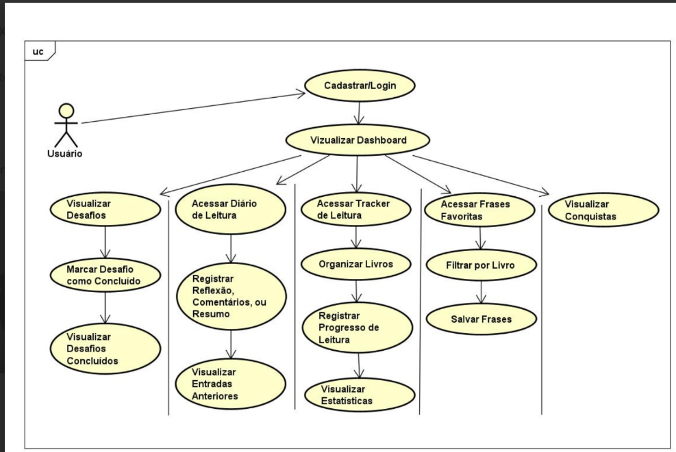
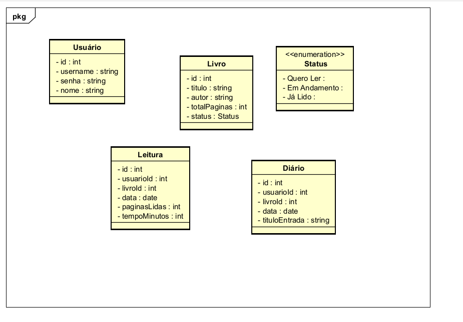
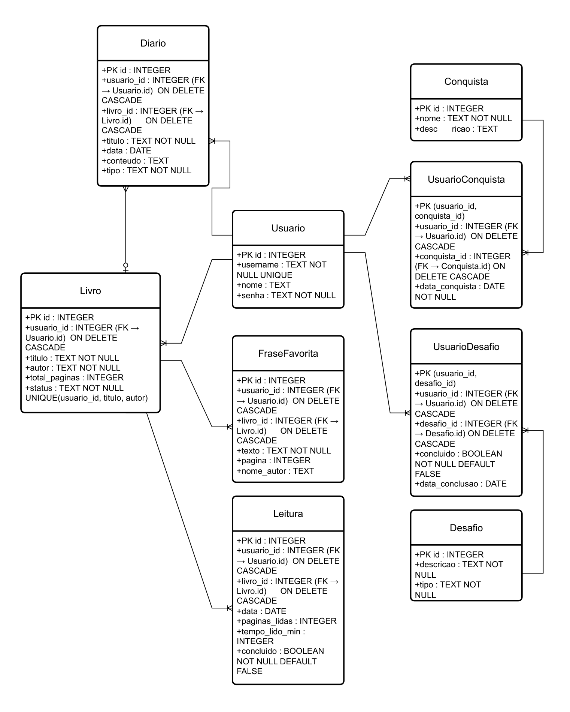

📚 Páginas Luminis
Um website interativo criado para incentivar o hábito da leitura no Brasil, oferecendo desafios de leitura, diário de reflexões, frases favoritas e acompanhamento de progresso.
O Problema
Segundo a pesquisa Retratos da Leitura no Brasil (2024), o país perdeu 6,7 milhões de leitores nos últimos quatro anos. Pela primeira vez, a maioria da população (53%) não leu nem parte de um livro nos três meses anteriores à pesquisa.
Funcionalidades
📘 Desafios de Leitura — pequenos desafios diários/semanais para incentivar constância.
📓 Diário de Leitura — registro de resumos, reflexões e comentários.
📖 Frases Favoritas — coleção pessoal de trechos marcantes.
📊 Tracker de Leitura — organização de livros por status, com progresso.
🏅 Conquistas — gamificação leve para reforçar motivação.
Diagrama de Casos de Uso

Diagrama de Classes

Diagrama Entidade-Relacionamento (DER)
